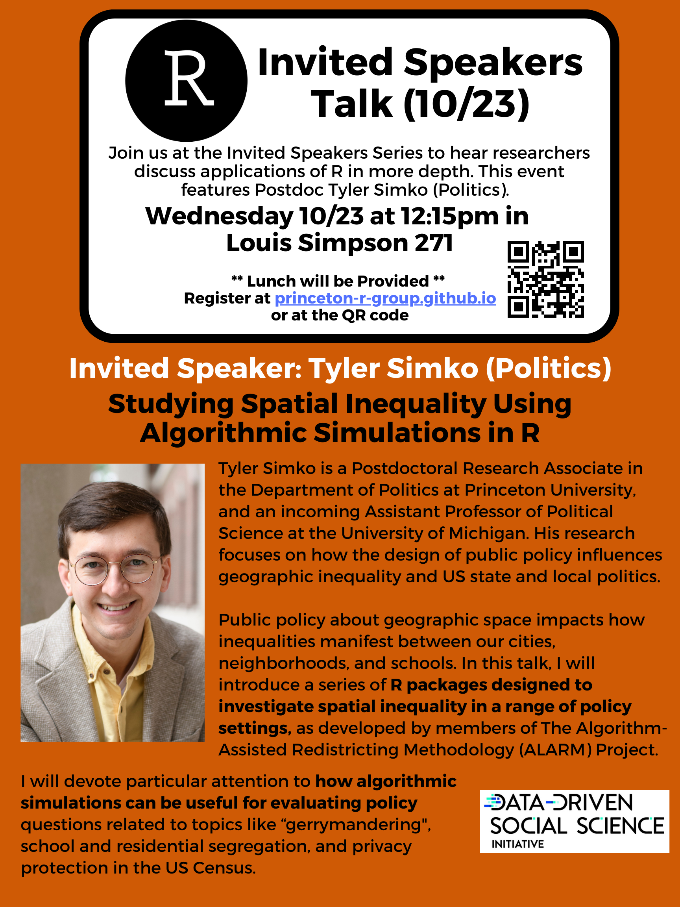
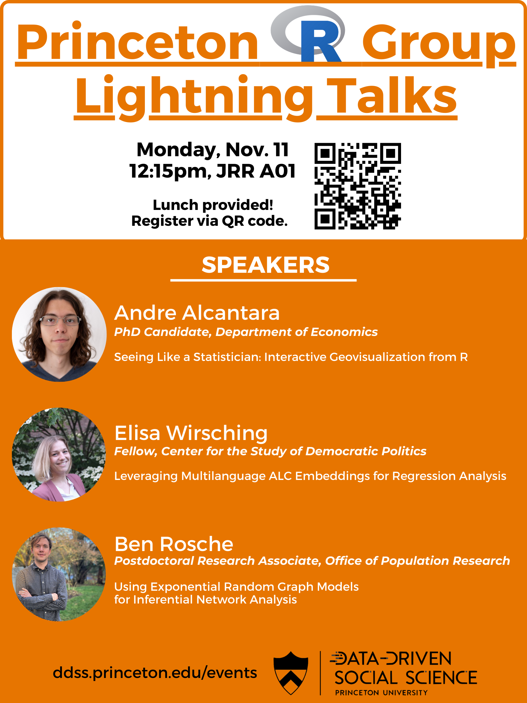
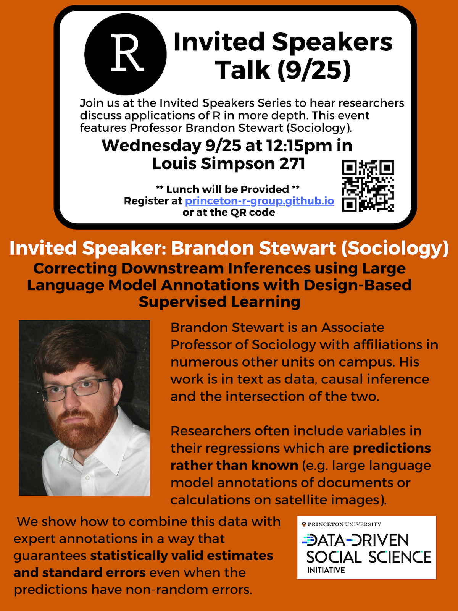
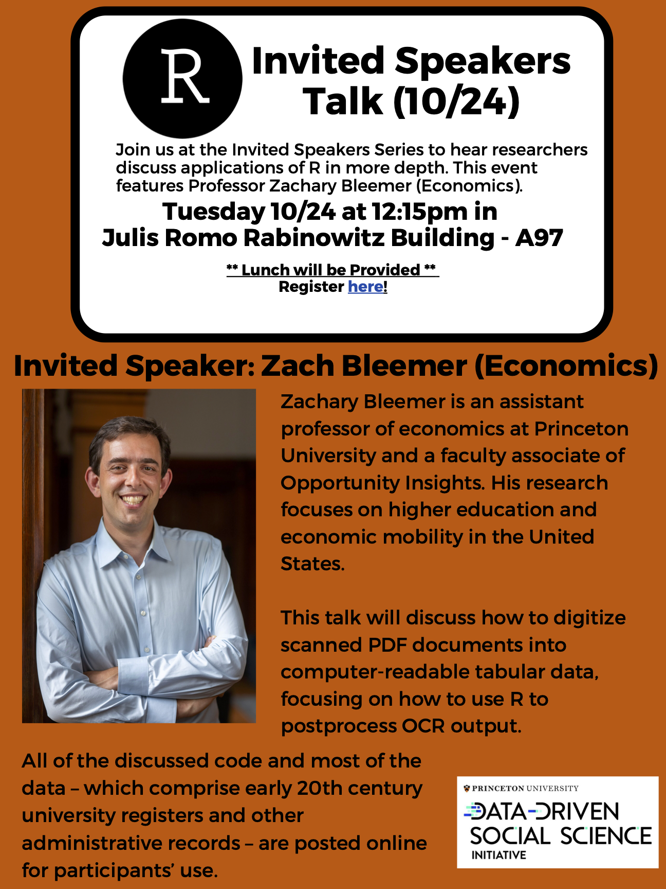
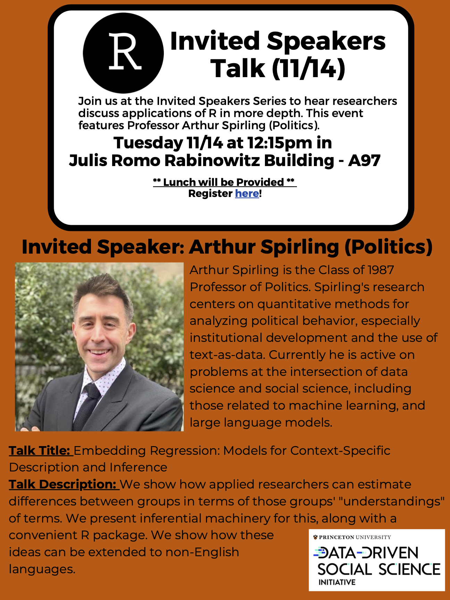
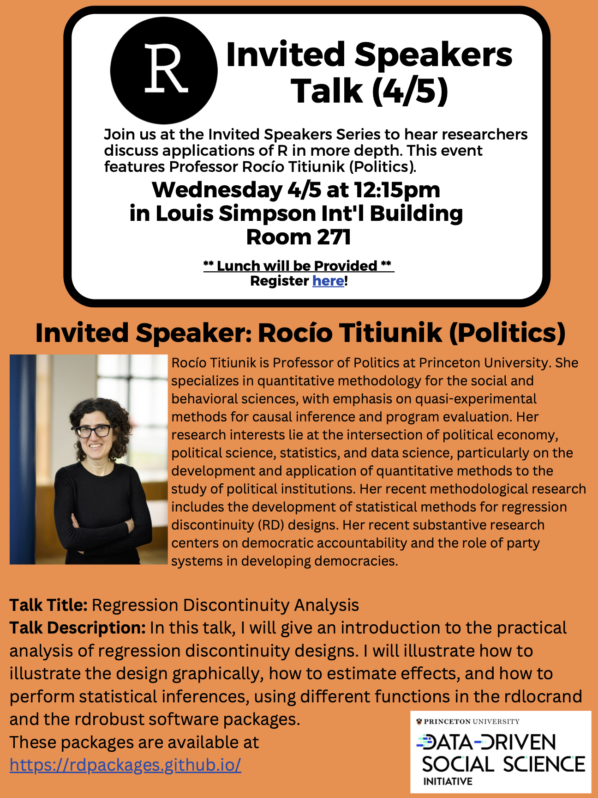

Events
Upcoming Events
Below are our upcoming events for Fall 2024. Join our listserv to stay updated!
Invited Speakers Talk: Studying Spatial Inequality Using Algorithmic Simulations in R (Tyler Simko, POL)
- October 23, 2024, 12:15pm, Louis Simpson 271

Lightning Talks - Monday November 11, 2024, in JRR A01 - RSVP link
- Seeing Like a Statistician: Interactive Geovisualization from R (Andre Alcantara, ECON)
- In this talk, I will introduce through examples some options in the R ecosystem for visualizing different types of geospatial data, with a focus on interactive tools for exploration and presentation in empirical work.
- Leveraging Multilanguage ALC Embeddings for Regression Analysis (Elisa Wirsching, POL)
- Word embeddings are now a vital resource for social science research. Unfortunately, it can be difficult to obtain high quality embeddings for non-English languages, and it may be computationally expensive to do so. I present ALC embedding resources that are adaptable to scholars’ idiosyncratic settings and show how to integrate them in a regression-style framework.
- Using Exponential Random Graph Models for Inferential Network Analysis (Ben Rosche, SOC)
- This talk introduces exponential random graph models (using the statnet and ergm R packages) for modeling network formation. I show how these models can help uncover the micro-level mechanisms that shape macro-level network structures.
- Seeing Like a Statistician: Interactive Geovisualization from R (Andre Alcantara, ECON)

Past Events
Fall 2024
- Invited Speakers Talk: Correcting Downstream Inferences using Large Language Model Annotations (or other predicted variables) with Design-Based Supervised Learning (Professor Brandon Stewart, SOC)
- September 25, 2024, 12:15pm, Louis Simpson 271
- Link to the
{dsl}R package documentation

Spring 2024
Workshop: Advanced Geospatial I - Analysis with R (Kim Kreiss, SPIA) - Feburary 24, 2024
- Link to Kim’s workshop materials on Github
Fall 2023
Workshop: Using ChatGPT and R for Effective Research and Teaching (Angela Li, SOC) - September 28, 2023
Invited Speakers Talk: Formatted Optical Character Recognition (Zachary Bleemer, ECON) - October 24, 2023

- Invited Speakers Talk: Embedding Regression: Models for Context-Specific Description and Inference (Arthur Spirling, POL) - November 14, 2023

Lightning Talks - November 30, 2023
Quantitative Sociological Semantics and Conceptual Ethics (Zac Lim, SOC)
Running 100 Imputations on HPC Clusters (Muhammet Emre Coskun, SPIA)
Creating Effective Shiny Apps (Jamie Caldwell, HMEI)
Spring 2023
Workshop: Introduction to R for Public Policy Applications (Kim Kreiss, SPIA) - February 10, 2023
Workshop: Creating Engaging Data Visualizations in R with ggplot2 (Angela Li, SOC) - February 24, 2023
Graduate Lightning Talks - March 24, 2023
Reproducible Coding Workflows (Varun Satish, SOC)
R for Humanitarian Data Collection (Noe Hinck, SPIA)
Developing a Shiny App for the Princeton Gym (John Kearns, SPIA)
Invited Speakers Talk: Regression Discontinuity Analysis (Rocío Titiunik, POL) - April 5, 2023
